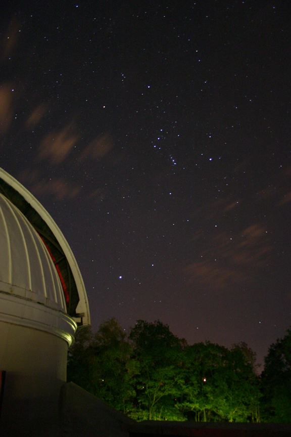

Orion With Clouds
Still another work of art from our very own Mike Roman. Mike stayed up until 3:30 AM to catch this winter constellation in September. In addition to Orion, you can see Sirius in the lower left corner (notice how Orion's belt almost points toward it). Sirius is the brightest star in Canis Major, the larger of Orion's two hunting dogs, and in fact the brightest star in the entire sky. It is also one of the nearest stars at only 8.6 light years away. There are only four stars closer, and of those only one, Alpha Centauri, is visible without binoculars or a telescope.
